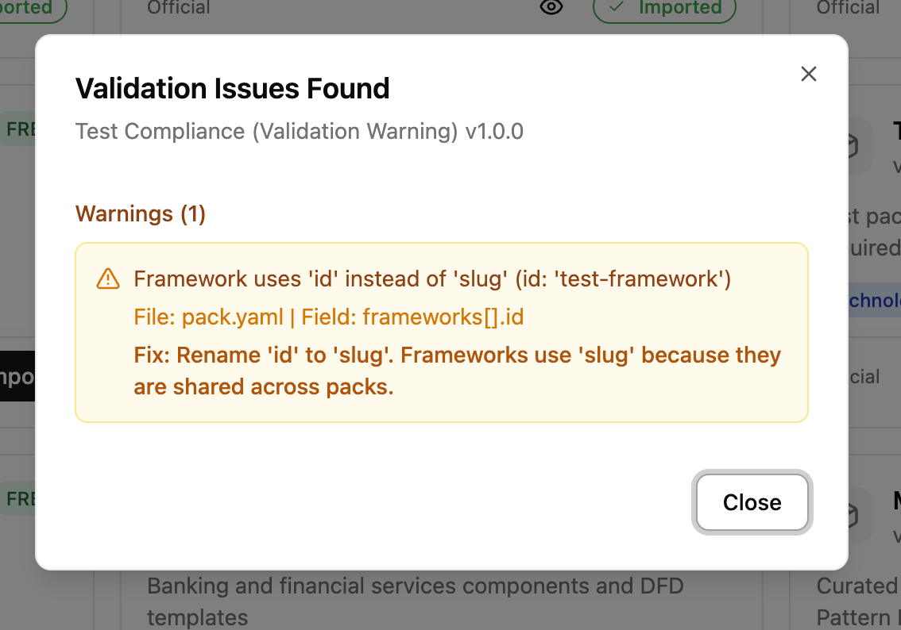
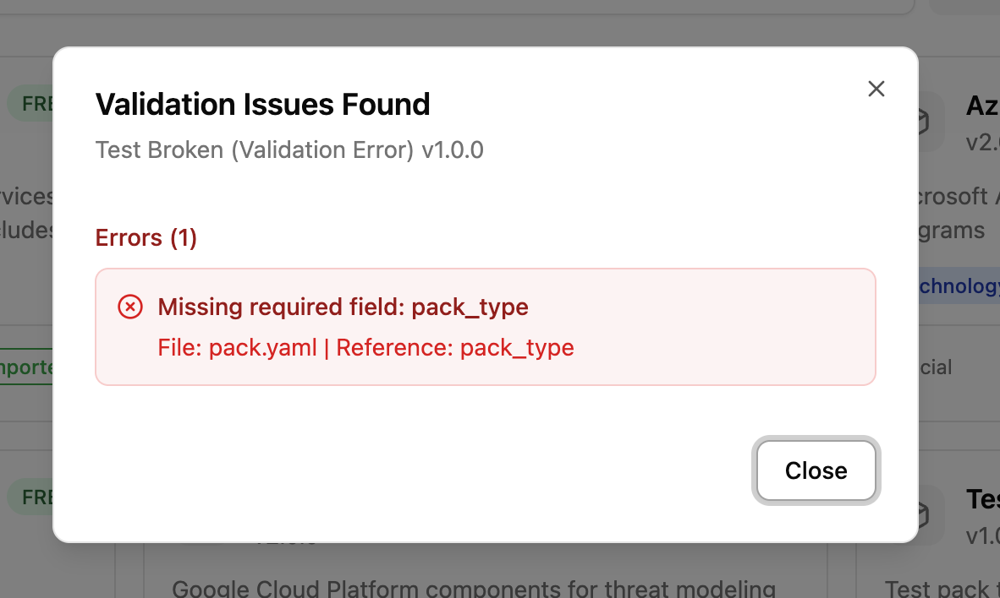

Creating Library Packs¶
Library packs are modular bundles of threat-modeling content: components, threats, countermeasures, taxonomy mappings, compliance overlays, and DFD templates. They are designed for LLM-assisted authoring with human review. You prompt an LLM to generate the YAML, review the output for accuracy, validate it, and submit.
For background on what library packs are and how they work in the UI, see Library Packs (Concepts). For the complete field-level YAML reference, see libraries/README.md.
The canonical reference pack is aws (libraries/packs/threat-libraries/aws/). This guide walks through its structure and uses it as the model for creating your own.
Workflow overview¶
Creating a library pack follows five steps:
- Choose a pack type and determine which files you need.
- Prompt an LLM (Claude, GPT, etc.) to generate the YAML files.
- Review the output for accuracy, completeness, and consistency.
- Validate and test by importing the pack locally.
- Submit a pull request with your pack.
Choosing a pack type¶
Your pack type determines which files you need to create.
| Pack type | What it contains | Required files | Optional files |
|---|---|---|---|
technology |
Components only | pack.yaml, components.yaml |
dfd-templates/ |
threat |
Threats + countermeasures | pack.yaml, threats.yaml, countermeasures.yaml |
joins/threats-countermeasures.yaml, taxonomy joins |
full |
Everything | pack.yaml, components.yaml, threats.yaml, countermeasures.yaml, joins/ |
dfd-templates/, compliance overlays |
compliance |
Framework definitions | pack.yaml with frameworks: block (uses slug, not id) |
None |
taxonomy |
Classification entries | pack.yaml with taxonomies: block (uses slug, not id) |
None |
template |
DFD templates only | pack.yaml, dfd-templates/ |
None |
Most community contributions will be technology packs (adding components for a new cloud provider or tool) or full packs (components with threats and countermeasures).
The canonical pack: aws¶
The aws pack is a full pack that demonstrates every file type. Use it as your template.
Directory layout¶
libraries/packs/threat-libraries/aws/
├── pack.yaml # Pack metadata
├── components.yaml # 4 components (S3, Lambda, API Gateway, DynamoDB)
├── threats.yaml # ~15 threats across all components
├── countermeasures.yaml # ~20 countermeasures
├── joins/
│ ├── components-threats.yaml # Which threats apply to which components
│ ├── threats-countermeasures.yaml # Which countermeasures mitigate which threats
│ ├── threats-stride.yaml # Threat → STRIDE mappings
│ ├── threats-cwe.yaml # Threat → CWE mappings
│ ├── threats-capec.yaml # Threat → CAPEC mappings
│ ├── threats-mitre-attack.yaml # Threat → ATT&CK mappings
│ ├── countermeasures-nist-csf.yaml # Countermeasure → NIST CSF mappings
│ ├── countermeasures-owasp.yaml # Countermeasure → OWASP mappings
│ ├── countermeasures-soc2.yaml # Countermeasure → SOC 2 mappings
│ ├── countermeasures-asvs.yaml # Countermeasure → ASVS mappings
│ └── countermeasures-cra.yaml # Countermeasure → CRA mappings
└── dfd-templates/
└── s3-lambda.yaml # Pre-built serverless DFD template
Anatomy walkthrough¶
pack.yaml defines the pack identity and dependencies:
pack:
schema_version: 1
slug: aws
name: AWS
version: 1.1.0
pack_type: full
description: |
AWS pack covering core infrastructure and AI/ML services
with associated threats and countermeasures.
author: Precogly
depends_on:
- taxonomies/stride-taxonomy
- taxonomies/capec
- taxonomies/cwe
- taxonomies/mitre-attack
tags:
- aws
- cloud
- serverless
- technology
- saas
Key points:
schema_versiondeclares the pack format version. Always use1(the current version). This is checked at import time — packs with an unsupported version are rejected.slugmust be unique, lowercase, hyphens only.depends_onlists taxonomy packs (using path-format strings) whose entries the join files reference. Without these, taxonomy mappings won't resolve on import.
components.yaml defines the technology building blocks:
components:
- id: s3
name: Amazon S3
category: datastore
type: Object Storage
provider: aws
description: |
Amazon Simple Storage Service (S3) provides scalable object storage
for data backup, archival, and analytics.
threats.yaml defines what can go wrong:
threats:
- id: s3-public-exposure
name: S3 Bucket Public Exposure
description: |
S3 bucket is publicly accessible, exposing sensitive data
to unauthorized users.
countermeasures.yaml defines security controls:
countermeasures:
- id: s3-block-public-access
name: S3 Block Public Access
description: |
Enable S3 Block Public Access settings at account and bucket level.
Prevents accidental public exposure.
control_type: preventive
cost: low
Join files wire everything together. See libraries/README.md for the full join file reference.
Design rationale¶
The aws pack demonstrates several important patterns:
- Threat-per-component granularity: Each threat targets a specific component (e.g.,
s3-public-exposurefor S3) rather than being generic. This ensures threats are actionable. - Cross-component countermeasure sharing: A countermeasure like
lambda-input-validationcan appear in multiple threat mappings, enabling zone protections. - Platform countermeasures: Some controls use
default_status: platformto indicate infrastructure-level controls managed by the security team. See Platform Controls. - Multiple taxonomy mappings: Each threat maps to STRIDE, CWE, CAPEC, and ATT&CK, giving users rich classification data.
Content ratios¶
As a guideline, aim for these ratios per component:
- 3-5 threats per component
- 1-3 countermeasures per threat
- At least STRIDE mapping for every threat (CWE, CAPEC, ATT&CK are valuable additions)
Prompting an LLM¶
LLMs are effective at generating structured threat-modeling YAML. The key is giving them the right context.
Prompt template¶
Use this as a starting point, adapting it to your pack:
I'm creating a library pack for Precogly, an open-source threat modeling platform.
The pack covers [TECHNOLOGY/DOMAIN].
Generate the following YAML files for a [pack_type] pack:
- pack.yaml (slug: [your-slug], pack_type: [type])
- components.yaml with [N] components
- threats.yaml with 3-5 threats per component
- countermeasures.yaml with countermeasures for each threat
- joins/components-threats.yaml
- joins/threats-countermeasures.yaml
- joins/threats-stride.yaml
Use these conventions:
- All IDs: lowercase with hyphens (e.g., "s3-public-exposure")
- Threat descriptions: explain what the threat is and how it occurs
- Countermeasure descriptions: explain what the control does and how it helps
- control_type: preventive, detective, corrective, deterrent, recovery, compensating, or procedural
- cost: low, medium, or high
- applies_to in component-threat joins: "component", "flow", or "both"
Reference this example from the aws pack for structure:
[paste a sample from aws]
Example prompts¶
Technology pack (components only):
Create a technology library pack for Google Cloud Platform covering:
Compute Engine, Cloud Storage, Cloud SQL, Cloud Functions, and Pub/Sub.
Generate pack.yaml and components.yaml only. Use pack_type: technology,
slug: gcp-core, provider: gcp.
Full pack:
Create a full library pack for Kubernetes covering:
Pod, Service, Ingress, ConfigMap, and Secret.
Generate all files including threats, countermeasures, and STRIDE mappings.
Use pack_type: full, slug: kubernetes-core.
Include 3-5 threats per component and appropriate countermeasures.
Tips for better results¶
- Provide the
awsfiles as context. The more examples the LLM sees, the more consistent its output. - Generate one file at a time if the pack is large. Start with components, then threats, then countermeasures, then joins.
- Ask for specific threat categories. For example: "Include at least one data exposure threat and one injection threat for each component."
- Specify the taxonomy entries. If you want STRIDE mappings, list the valid STRIDE categories:
spoofing,tampering,repudiation,information-disclosure,denial-of-service,elevation-of-privilege.
Reviewing LLM output¶
LLM-generated content needs careful human review. Check each area:
Accuracy¶
- Component descriptions match the actual technology (not hallucinated features)
- Threats are real, documented vulnerabilities for that technology
- Countermeasures are actual security controls that exist and work as described
- Taxonomy mappings use correct entry IDs (e.g., valid CWE numbers, correct STRIDE categories)
Completeness¶
- Every component has at least 3 threats mapped in
components-threats.yaml - Every threat has at least 1 countermeasure in
threats-countermeasures.yaml - Every threat has a STRIDE mapping in
threats-stride.yaml - No orphan items (threats without component mappings, countermeasures without threat mappings)
Consistency¶
- All IDs follow the
lowercase-hyphenpattern - IDs referenced in join files match IDs defined in their respective files
- No duplicate IDs within any file
-
control_typeandcostvalues use only allowed values -
applies_touses onlycomponent,flow, orboth
Quality¶
- Descriptions are specific, not generic boilerplate
- Threats describe the attack vector, not just the impact
- Countermeasures explain how to implement the control, not just what it prevents
- No unnecessary duplication between threats or countermeasures
Validating and testing locally¶
Automatic validation on import¶
Validation runs automatically when you click Import in the UI. If your pack has structural issues (wrong key names, invalid enum values, missing fields), you will see a dialog listing each problem with a suggested fix. Errors block import and must be fixed. Warnings pause the import for review; if they are acceptable, click Import Anyway to continue.
Warnings identify issues that would cause data loss (e.g., using id instead of slug for frameworks):

Errors identify missing required fields or structural problems:

Validate via API¶
You can also validate explicitly using the API endpoint:
This endpoint requires Security Team role. It checks structural issues (metadata, enums, key names) and reference issues (broken joins, missing components).
Common validation issues¶
| Issue | Message | Fix |
|---|---|---|
Framework uses id instead of slug |
"Framework uses 'id' instead of 'slug'" | Rename id: to slug: in the frameworks section of pack.yaml |
Taxonomy uses id instead of slug |
"Taxonomy uses 'id' instead of 'slug'" | Rename id: to slug: in taxonomy.yaml |
Invalid control_type |
"Unknown control_type" | Use preventive, detective, corrective, deterrent, recovery, compensating, or procedural |
Invalid cost |
"Unknown cost" | Use low, medium, or high |
Invalid category |
"Unknown category" | Use process, datastore, external_human_actor, or external_system_actor |
Missing pack_type |
"Missing required field: pack_type" | Add pack_type to the pack: section |
Missing schema_version |
"Missing schema_version field" | Add schema_version: 1 to the pack: section |
Unsupported schema_version |
"Unsupported schema_version: N" | Use schema_version: 1 (the only currently supported version) |
Missing component id |
"Component at index N has no 'id' field" | Add id: to the component entry |
Import and verify in the UI¶
- Place your pack directory under
libraries/packs/. - Start the development server (see Development Setup).
- Navigate to Library Packs in the sidebar.
- Find your pack in the catalog and click to preview it.
- Verify:
- Components appear with correct names, categories, and descriptions
- Threats show with their taxonomy tags (STRIDE, CWE, etc.)
- Countermeasures show with correct control types and cost levels
- Compliance mappings appear if you included them
- Click Import. Validation runs automatically. Fix any reported issues.
- Verify the pack imports successfully (success toast appears).
- Create a test threat model, add a component from your pack, and confirm threats and countermeasures propagate correctly.
Submission guidelines¶
Pull request expectations¶
- One pack per PR.
- Include a brief description of what the pack covers and why it's useful.
- List the components, number of threats, and number of countermeasures in the PR description.
Required fields¶
Your pack.yaml must include:
pack:
schema_version: 1 # pack format version (always 1)
slug: your-pack-slug # unique, lowercase, hyphens only
name: Your Pack Name
version: 1.0.0 # start at 1.0.0 for new packs
pack_type: full # or technology, threat, etc.
description: |
Clear description of what this pack covers.
author: Your Name # or your GitHub username
tags:
- relevant
- tags
Versioning¶
Follow semantic versioning:
- Patch (
1.0.1): Fix descriptions, correct taxonomy mappings - Minor (
1.1.0): Add new components, threats, or countermeasures - Major (
2.0.0): Remove or rename existing IDs (breaking change)
License¶
All contributed packs are subject to the project's license. By submitting a pack, you agree that your contribution can be distributed under the same terms.
Quality standards¶
Minimum thresholds¶
| Criterion | Minimum |
|---|---|
| Components | At least 3 per technology pack |
| Threats per component | At least 3 |
| Countermeasures per threat | At least 1 |
| STRIDE mappings | Required for every threat |
| Descriptions | At least 1 sentence each |
| IDs | Must match ^[a-z0-9]+(-[a-z0-9]+)*$ |
PR review checklist¶
Reviewers will check:
-
pack.yamlhas all required fields - All IDs are unique within their file and follow naming conventions
- All join file references resolve to existing IDs
- Threats are accurate and specific to the technology
- Countermeasures are real, implementable controls
- Taxonomy mappings use correct entry IDs
- No sensitive or proprietary information is included
- Pack imports successfully and renders correctly in the UI
- Version starts at
1.0.0for new packs